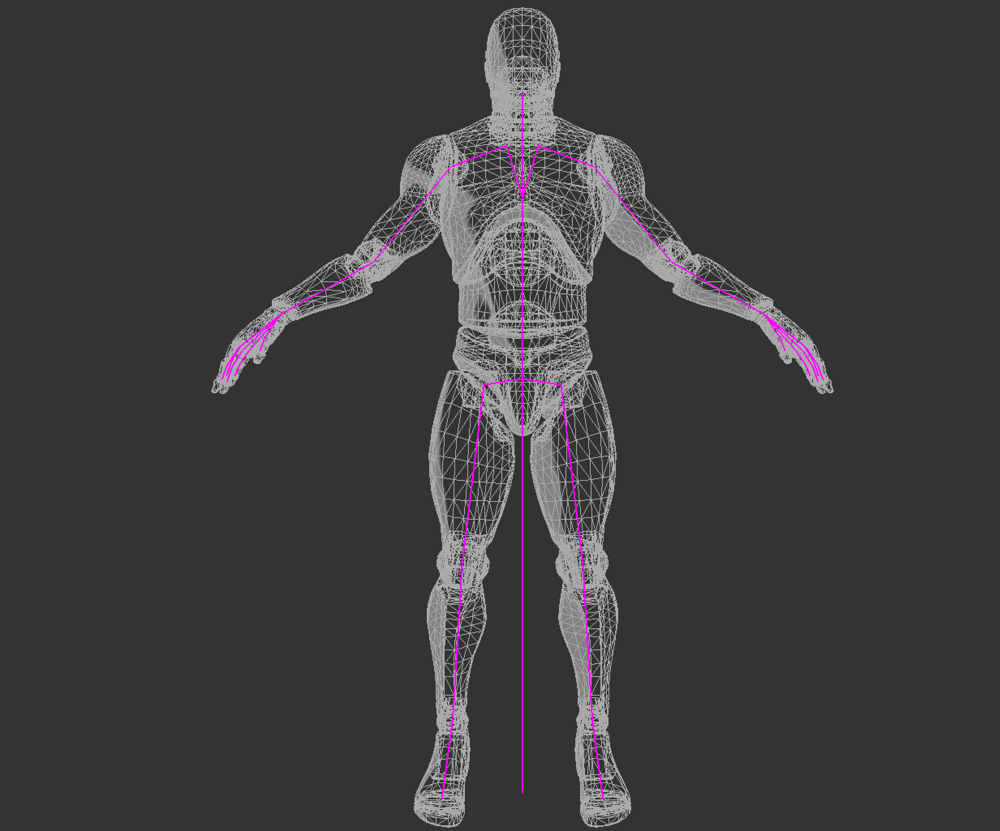

Skinning
A mesh is typically modelled in a "T" or an "A" pose, this pose is refered to as the bind pose of the mesh. The skeleton of a mesh is constructed to match the bind pose of the mesh. The following image shows both a mesh and its skeleton in their bind pose.
Skinning refers to deforming the mesh in a way that it moves with the skeleton. The demo below shows the skeleton of a character along with the mesh that is the "skin". The below demo uses smooth skinning.
Mesh structure
Before we explore rigid skinning, let's discuss how a non animated mesh is stored in memory. To get something like the above demo, a mesh will need to have the following components per vertes:
- A vec3 for the vertex position
- A vec3 for the vertex normal
- A vec2 for the vertex texture coordinate
A mesh is just a collection of vertices. One way to express this in code is to create a vertex structure that holds all of the components a vertex contains. When creating a Mesh class, it should hold a list of Vertex objects.
struct Vertex {
vec3 position;
vec3 normal;
vec2 uv;
}
class Mesh {
public:
std::vector<Vertex> vertices;
// rest of class
}
Mesh transformation
Next, let's talk about the tarnsformation pipeline of a mesh. Generally, the vertex transformation pipeline is executed like this:
- A mesh is created. Vertices are in model space
- Each vertex is multiplied by the "model" matrix. This puts the vertices into world space
- Each vertex is multiplied by the view matrix. This puts the vertices into camera space
- Each vertex is multiplied by the projection matrix. This puts the vertices into NDC space.
Once in NDC space the graphics API takes care of clipping and everything else. We will need to modify this pipeline to take skinning a mesh into consideration.